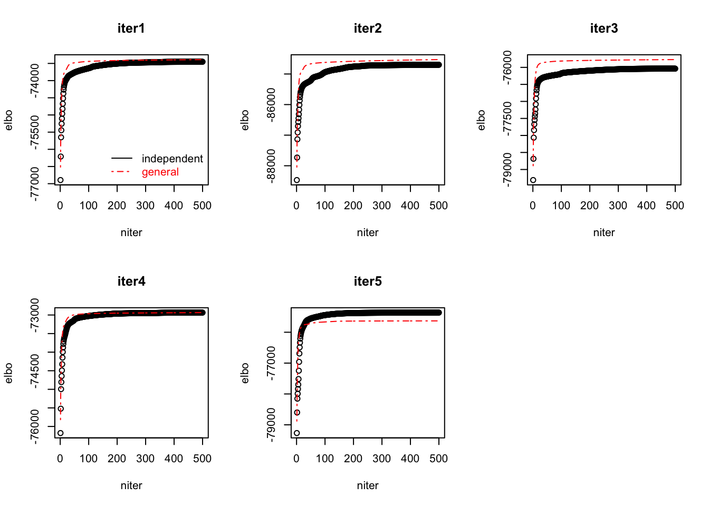

Last updated: 2020-10-24
Checks: 7 0
Knit directory: poisson_mash/
This reproducible R Markdown analysis was created with workflowr (version 1.6.2). The Checks tab describes the reproducibility checks that were applied when the results were created. The Past versions tab lists the development history.
Great! Since the R Markdown file has been committed to the Git repository, you know the exact version of the code that produced these results.
Great job! The global environment was empty. Objects defined in the global environment can affect the analysis in your R Markdown file in unknown ways. For reproduciblity it’s best to always run the code in an empty environment.
The command set.seed(20200618) was run prior to running the code in the R Markdown file. Setting a seed ensures that any results that rely on randomness, e.g. subsampling or permutations, are reproducible.
Great job! Recording the operating system, R version, and package versions is critical for reproducibility.
Nice! There were no cached chunks for this analysis, so you can be confident that you successfully produced the results during this run.
Great job! Using relative paths to the files within your workflowr project makes it easier to run your code on other machines.
Great! You are using Git for version control. Tracking code development and connecting the code version to the results is critical for reproducibility.
The results in this page were generated with repository version 6faa5d2. See the Past versions tab to see a history of the changes made to the R Markdown and HTML files.
Note that you need to be careful to ensure that all relevant files for the analysis have been committed to Git prior to generating the results (you can use wflow_publish or wflow_git_commit). workflowr only checks the R Markdown file, but you know if there are other scripts or data files that it depends on. Below is the status of the Git repository when the results were generated:
Ignored files:
Ignored: .DS_Store
Ignored: .Rhistory
Ignored: code/.DS_Store
Ignored: output/.DS_Store
Untracked files:
Untracked: code/code_random_effects.R
Untracked: code/examples.R
Untracked: code/examples_updated.R
Untracked: code/util6.R
Untracked: code/util8.R
Untracked: code/util_ed.R
Untracked: code/util_random_effects.R
Untracked: code/util_random_effects_v2.R
Untracked: data/data_jr.RData
Untracked: output/B_cells/
Untracked: output/Ctrl2/
Untracked: output/IL12p70/
Untracked: output/Ly6C-/
Untracked: output/ed_all_trts_maxiter1500.Rds
Untracked: output/ed_second_batch_maxiter1500.Rds
Untracked: output/ed_second_batch_v2_maxiter2000.Rds
Untracked: output/ed_v1_maxiter1000.Rds
Untracked: output/ed_v2_maxiter1000.Rds
Untracked: output/examples.pdf
Untracked: output/examples/
Untracked: output/examples_mash.pdf
Untracked: output/mash_data_limma.rds
Untracked: output/mash_data_second_batch.rds
Untracked: output/mash_fit_limma.rds
Untracked: output/mash_fit_limma_all_trts.rds
Untracked: output/mash_fit_second_batch.rds
Untracked: output/non_null_sim_setting1/
Untracked: output/non_null_sim_setting2/
Untracked: output/non_null_sim_setting3/
Untracked: output/non_null_sim_setting4/
Untracked: output/null_sim/
Untracked: output/pois_mash_contrast_posterior_all_trts.Rds
Untracked: output/pois_mash_contrast_posterior_second_batch.Rds
Untracked: output/pois_mash_contrast_posterior_second_batch_v2.Rds
Untracked: output/pois_mash_fit_all_trts.Rds
Untracked: output/pois_mash_fit_second_batch.Rds
Untracked: output/pois_mash_fit_second_batch_v2.Rds
Untracked: output/poisson_mash_fit.Rds
Untracked: output/poisson_mash_fit_contrast_posterior.Rds
Untracked: output/realdata/
Untracked: output/simulations/
Note that any generated files, e.g. HTML, png, CSS, etc., are not included in this status report because it is ok for generated content to have uncommitted changes.
These are the previous versions of the repository in which changes were made to the R Markdown (analysis/sim_pois_mash_two_versions.Rmd) and HTML (docs/sim_pois_mash_two_versions.html) files. If you’ve configured a remote Git repository (see ?wflow_git_remote), click on the hyperlinks in the table below to view the files as they were in that past version.
| File | Version | Author | Date | Message |
|---|---|---|---|---|
| Rmd | 6faa5d2 | yushaliu | 2020-10-24 | Add comparisons of the two versions of poisson mash |
Suppose there are \(j=1, \dots, J\) genes and \(r=1, \dots, R\) conditions. For each gene \(j\), denote the sum of counts over cells from condition \(r\) by \(X_{jr}\). Let \(s_r\) denote the sequencing depth of condition \(r\), a constant that is proportional to \(\sum_{j=1}^{J} X_{jr}\). We assume the following model: \[\begin{align} X_{jr} \sim & \; Pois(s_r \lambda_{jr}), \\ \log(\lambda_{jr}) = & \; \mu_j + \theta_{jr}, \\ \theta_j = & \; \beta_j + \eta_j, \\ \quad \beta_j \sim & \; \sum_{k,l} \pi_{kl} N(0, w_l U_k) \quad \text{where} \;\; \sum_{k,l} \pi_{kl} =1, \\ \eta_j \sim & \; N(0, S_j) \quad \text{where} \;\; S_j = \psi_j^2 I. \\ \end{align}\]
We introduce a \(KL \times 1\) vector of latent indicator \(z_j\) for each gene \(j\) such that \(\sum_{k,l} z_{jkl} = 1\) and \[\begin{align} \beta_j \mid (z_{jkl} = 1) \; \sim \; MVN(0, \: w_l U_k). \\ \end{align}\]
We approximate the true posterior \(p\left(\theta_j, z_j \mid x_j, \mu_j, \psi_j^2, \pi, U \right)\) with \[\begin{align} q(\theta_j, z_j) = \prod_{k, l} \left[\zeta_{jkl} \: q_{jkl}(\theta_j) \right]^{z_{jkl}}, \\ \end{align}\] where each \(q_{jkl}(\theta_j)\) is restricted to be a MVN.
Depending on the assumption of the joint posterior of \((\beta_j, \eta_j)\), we consider two different versions of poisson mash model. The “independent” version assumes \(q(\beta_j, \eta_j) = q(\beta_j) q(\eta_j)\), and the “general” version does not enforce this posterior independence between \(\beta_j\) and \(\eta_j\). We apply the two versions of poisson mash to some simulated single cell datasets, and compare their performance in various aspects.
We apply poisson mash to single cell data simulated under the null. More specifically, we start with a subset of the single cell cytokines data from Ly6C- monocytes, which include 1) 1,879 cells from 25 conditions from the second batch, and 2) 6,794 genes that have at least 100 total counts over these 25 conditions. Then we randomly permute the cells with respect to the condition labels so that there no longer exists association between gene expression levels and conditions.
res <- readRDS("output/Ly6C-/null_summary.Rds")
### look at ELBO in the ED step
par(mfrow=c(2,3))
for(i in 1:5){
plot(res$ELBO.ed[[i]], ylim=range(c(res$ELBO.ed[[i]], res$ELBO2.ed[[i]])), xlab = "niter", ylab = "elbo", main=paste0("iter", i))
lines(res$ELBO2.ed[[i]], lty=4, col="red")
if(i %% 5 ==1)
{
legend("bottomright", legend=c("independent", "general"), text.col=c("black", "red"), col=c("black", "red"), lty=c(1,4), bty="n")
}
}### look at the running time per iteration in the ED step (in one replicate dataset)
# the independent version
res$runtime.ed[[1]]/length(res$ELBO.ed[[1]]) user system elapsed
1.887110 0.002138 1.890050 # the general version
res$runtime2.ed[[1]]/length(res$ELBO2.ed[[1]]) user system elapsed
2.789700 0.002324 2.793030 ### look at ELBO when fitting poisson mash to the entire dataset
par(mfrow=c(2,3))
for(i in 1:5){
plot(res$ELBO.fit[[i]], xlim=c(0, pmax(length(res$ELBO.fit[[i]]), length(res$ELBO2.fit[[i]]))),
ylim=range(c(res$ELBO.fit[[i]], res$ELBO2.fit[[i]])), xlab = "niter", ylab = "elbo", main=paste0("iter", i))
lines(res$ELBO2.fit[[i]], lty=4, col="red")
if(i %% 5 ==1)
{
legend("bottomright", legend=c("independent", "general"), text.col=c("black", "red"), col=c("black", "red"), lty=c(1,4), bty="n")
}
}### look at the total running time when fitting poisson mash to the entire dataset (in one replicate dataset)
# the independent version
res$runtime.fit[[1]] user system elapsed
2932.942 12.600 2946.572 # the general version
res$runtime2.fit[[1]] user system elapsed
5719.494 9.811 5731.340 ### look at the number of false positives
# the independent version
res$num_effects[1] 98 78 160 92 160# the general version
res$num_effects2[1] 135 89 192 114 179We then apply poisson mash to single cell data simulated under the null and with random effects added. That is, we first permute the cells randomly with respect to the condition labels to generate null data, and then add gene-wise random effects via thinning to the randomly permuted data. For random effects, we simulate \(\psi^2_j\) such that its distribution resembles the empirical distribution of \(\psi^2_j\) we see from the poisson mash fit to the original dataset.
res <- readRDS("output/Ly6C-/null_random_effects_summary.Rds")
### look at ELBO in the ED step
par(mfrow=c(2,3))
for(i in 1:5){
plot(res$ELBO.ed[[i]], ylim=range(c(res$ELBO.ed[[i]], res$ELBO2.ed[[i]])), xlab = "niter", ylab = "elbo", main=paste0("iter", i))
lines(res$ELBO2.ed[[i]], lty=4, col="red")
if(i %% 5 ==1)
{
legend("bottomright", legend=c("independent", "general"), text.col=c("black", "red"), col=c("black", "red"), lty=c(1,4), bty="n")
}
}### look at the running time per iteration in the ED step (in one replicate dataset)
# the independent version
res$runtime.ed[[1]]/length(res$ELBO.ed[[1]]) user system elapsed
3.824818 0.004466 3.831128 # the general version
res$runtime2.ed[[1]]/length(res$ELBO2.ed[[1]]) user system elapsed
4.925436 0.005266 4.935108 ### look at ELBO when fitting poisson mash to the entire dataset
par(mfrow=c(2,3))
for(i in 1:5){
plot(res$ELBO.fit[[i]], xlim=c(0, pmax(length(res$ELBO.fit[[i]]), length(res$ELBO2.fit[[i]]))),
ylim=range(c(res$ELBO.fit[[i]], res$ELBO2.fit[[i]])), xlab = "niter", ylab = "elbo", main=paste0("iter", i))
lines(res$ELBO2.fit[[i]], lty=4, col="red")
if(i %% 5 ==1)
{
legend("bottomright", legend=c("independent", "general"), text.col=c("black", "red"), col=c("black", "red"), lty=c(1,4), bty="n")
}
}### look at the total running time when fitting poisson mash to the entire dataset (in one replicate dataset)
# the independent version
res$runtime.fit[[1]] user system elapsed
2714.764 10.242 2725.937 # the general version
res$runtime2.fit[[1]] user system elapsed
5284.775 10.692 5299.049 ### look at the number of false positives
# the independent version
res$num_effects[1] 30 25 25 100 44# the general version
res$num_effects2[1] 72 46 44 148 70We then apply poisson mash to simulated single cell data with differential expression across conditions in a subset of genes.
We start with a subset of the single cell cytokines data from Ly6C- monocytes, which include 1) 1,879 cells from \(R=25\) conditions from the second batch, and 2) \(J=5,007\) genes that have at least 200 total counts over these 25 conditions. We remove genes that have relatively few reads because we will add signals to the data via thinning.
Starting with the real dataset, we randomly permute the cells with respect to the condition labels to generate null data. Then we use thinning to add 1) fixed effects \(\beta_{jr} \sim \sum_k \pi_k MVN(0, U_k)\) to a randomly chosen subset of 1000 genes, and 2) random effects \(\eta_j \sim MVN(0, \: \psi^2_j I_R)\) to all genes. For fixed effects, the prior covariances \(U_k\)’s are learned from the poisson mash fit to the original dataset, with the effect size (in terms of \(\max_r \mid \beta_{jr}\mid\)) further scaled to be realistic. For random effects, we simulate \(\psi^2_j\) such that its distribution resembles the empirical distribution of \(\psi^2_j\) we see from the poisson mash fit to the original dataset.
res <- readRDS("output/Ly6C-/sim_signal_summary.Rds")
### look at ELBO in the ED step
par(mfrow=c(2,3))
for(i in 1:5){
plot(res$ELBO.ed[[i]], ylim=range(c(res$ELBO.ed[[i]], res$ELBO2.ed[[i]])), xlab = "niter", ylab = "elbo", main=paste0("iter", i))
lines(res$ELBO2.ed[[i]], lty=4, col="red")
if(i %% 5 ==1)
{
legend("bottomright", legend=c("independent", "general"), text.col=c("black", "red"), col=c("black", "red"), lty=c(1,4), bty="n")
}
}
### look at the running time per iteration in the ED step (in one replicate dataset)
# the independent version
res$runtime.ed[[1]]/length(res$ELBO.ed[[1]]) user system elapsed
15.01519 0.03485 15.07126 # the general version
res$runtime2.ed[[1]]/length(res$ELBO2.ed[[1]]) user system elapsed
8.337280 0.010148 8.353272 ### look at ELBO when fitting poisson mash to the entire dataset
par(mfrow=c(2,3))
for(i in 1:5){
plot(res$ELBO.fit[[i]], xlim=c(0, pmax(length(res$ELBO.fit[[i]]), length(res$ELBO2.fit[[i]]))),
ylim=range(c(res$ELBO.fit[[i]], res$ELBO2.fit[[i]])), xlab = "niter", ylab = "elbo", main=paste0("iter", i))
lines(res$ELBO2.fit[[i]], lty=4, col="red")
if(i %% 5 ==1)
{
legend("bottomright", legend=c("independent", "general"), text.col=c("black", "red"), col=c("black", "red"), lty=c(1,4), bty="n")
}
}### look at the total running time when fitting poisson mash to the entire dataset (in one replicate dataset)
# the independent version
res$runtime.fit[[1]] user system elapsed
14946.415 62.524 15025.203 # the general version
res$runtime2.fit[[1]] user system elapsed
12496.331 23.526 12531.109 ### plot ROC for detecting non-null units
par(mfrow=c(2,3))
for (i in 1:5){
plot(res$fpr.pois[i,] , res$tpr.pois[i,], type="l", xlim=c(0, 0.2), ylim=c(0, 1),
xlab="False positive rate", ylab="True positive rate", main=paste0("iter", i))
lines(res$fpr.pois2[i,], res$tpr.pois2[i,], lty=4, col="red")
if(i %% 5 ==1)
{
legend("bottomright", legend=c("independent", "general"), text.col=c("black", "red"), col=c("black", "red"), lty=c(1,4), bty="n")
}
}
#### plot ROC for detecting non-null pairs
par(mfrow=c(2,3))for (i in 1:5){
plot(res$fpr.pair.pois[i,] , res$tpr.pair.pois[i,], type="l", xlim=c(0, 0.2), ylim=c(0, 1),
xlab="False positive rate", ylab="True positive rate", main=paste0("iter", i))
lines(res$fpr.pair.pois2[i,], res$tpr.pair.pois2[i,], lty=4, col="red")
if(i %% 5 ==1)
{
legend("bottomright", legend=c("independent", "general"), text.col=c("black", "red"), col=c("black", "red"), lty=c(1,4), bty="n")
}
}
sessionInfo()R version 3.6.2 (2019-12-12)
Platform: x86_64-apple-darwin15.6.0 (64-bit)
Running under: macOS Catalina 10.15.7
Matrix products: default
BLAS: /Library/Frameworks/R.framework/Versions/3.6/Resources/lib/libRblas.0.dylib
LAPACK: /Library/Frameworks/R.framework/Versions/3.6/Resources/lib/libRlapack.dylib
locale:
[1] en_US.UTF-8/en_US.UTF-8/en_US.UTF-8/C/en_US.UTF-8/en_US.UTF-8
attached base packages:
[1] stats graphics grDevices utils datasets methods base
other attached packages:
[1] workflowr_1.6.2
loaded via a namespace (and not attached):
[1] Rcpp_1.0.4.6 rprojroot_1.3-2 digest_0.6.25 later_1.0.0
[5] R6_2.4.1 backports_1.1.7 git2r_0.27.1 magrittr_1.5
[9] evaluate_0.14 stringi_1.4.6 rlang_0.4.7 fs_1.4.1
[13] promises_1.1.0 whisker_0.4 rmarkdown_2.3 tools_3.6.2
[17] stringr_1.4.0 glue_1.4.1 httpuv_1.5.2 xfun_0.17
[21] yaml_2.2.1 compiler_3.6.2 htmltools_0.4.0 knitr_1.30